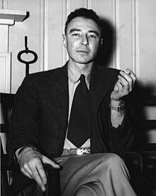
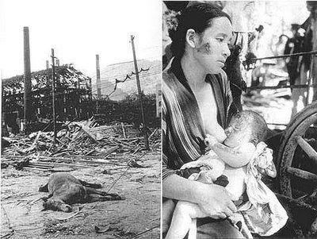

O projeto foi uma iniciativa dos Estados Unidos da América e durou de 13 de agosto de 1942 até 15 de agosto de 1947. O primeiro teste de explosão de uma bomba atômica foi realizado na base secreta do Projeto Manhattan, situada no deserto de Los Alamos, Novo México, no dia 16 de julho de 1945.
Um físico teórico brilhante, J. Robert Oppenheimer foi escolhido para dirigir um laboratório em Los Alamos, Novo México, como parte dos esforços dos Estados Unidos para desenvolver armas nucleares. Ele foi bem-sucedido, mas acabou se tornando um defensor contra o desenvolvimento de bombas ainda mais potentes.
Robert Oppenheimer; Enrico Fermi; Leo Szilard; Norris Bradbury; Niels Bohr; Hans Bethe; Richard Feynman; John Manley; Klaus Fuchs; Arthur Compton; Kenneth Bainbridge; Ernest Lawrence.
Ao final, o Projeto Manhattan foi responsável pela construção de três bombas: uma foi detonada no deserto do Novo México a fim de testes. e duas foram lançadas sobre o território japonês.
Hiroshima foi o primeiro alvo, no dia 6, e Nagasaki, o segundo, no dia 9. O número total de mortos ultrapassou os 210 mil nos primeiros dias.
